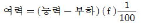
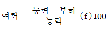
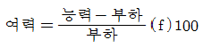
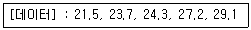
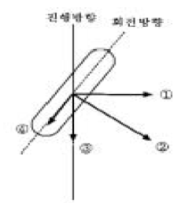
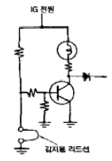

자동차정비기능장 (2005-07-17 기출문제)
1과목: 임의구분
1. 오일펌프에서 압송한 오일 전부를 오일 여과기에 여과한 다음 각 부분으로 공급하는 오일순환 방식은?
- 전류식
- 분류식
- 일체식
- 복합식
(정답률: 87%)

2. 자동차 엔진에서 공기과잉율과 연소효율과의 관계에 대한 설명 중 옳은 것은?
- 공기과잉률이 1보다 크면 연소효율은 좋아진다.
- 공기과잉률이 1보다 크면 연소효율이 낮아진다.
- 공기과잉률이 1보다 크면 불완전 연소가 일어난다.
- 공기과잉률과 연소효율은 서로 무관하다.
(정답률: 62%)
3. 흡기밸브를 통해서 흐르는 최대 공기량이 312kg/h, 열효율이 28%, 공연비가 14.7:1, 저위발열량이 10,830kcal/kg 인 기관의 최대 제동마력은 약 얼마인가?
- 95PS
- 110PS
- 97PS
- 102PS
(정답률: 21%)
4. 간헐 분사방식으로 공기의 체적을 직접 계량하는 전자제어 연료분사방식을 사용하는 것은?
- L-Jetronic
- K-Jetronic
- LH-Jetronic
- KE-Jetronic
(정답률: 69%)
5. 다음 중 정적 사이클에 속하는 기관은?
- 디젤기관
- 가솔린기관
- 소구기관
- 복합기관
(정답률: 79%)
6. 총배기량 1,600cc 이고, 실린더수가 4개, 연소실 체적이 50cc 일때 이 기관의 압축비는?
- 7
- 8
- 9
- 10
(정답률: 58%)
7. 주파수가 20Hz이고 가동시간이 15ms 일 때, Duty(%)는?
- 15%
- 30%
- 50%
- 35%
(정답률: 75%)
8. 전자제어 가솔린 분사기관에서 연소시 1회에 필요한 연료의 질량을 결정하는 요소에 들지 않는 것은?
- 기관 회전속도
- 흡기공기의 질량
- 목표 공연비
- 기관의 압축압력
(정답률: 68%)
9. 관로의 도중에 큰 실을 설치하여 배기가스를 급격히 팽창시켜 온도를 하강시킴과 동시에 소음작용을 하도록 한 소음기는?
- 용적형
- 공명형
- 흡수형
- 저항형
(정답률: 59%)
10. 기관의 기계효율에 직접적인 영향을 미치는 요소가 아닌것은?
- 실린더의 크기
- 연료의 완전연소
- 각종 펌프 압력
- 기관 회전수
(정답률: 31%)
11. 다음은 LPG 자동차의 엔진이 시동되지 않는 원인이다. 해당되지 않는 것은?
- LPG 배출밸브가 닫혀 있다.
- 솔레노이드 밸브(Solenoid Valve)의 작동이 불량하다.
- 연료 필터가 막혀있다.
- 봄베(Bombe)의 액면표시 장치가 불량하다.
(정답률: 86%)
12. 산소센서를 설치하는 목적은?
- 연료펌프의 작동을 위해서
- 정확한 공연비 제어를 위해서
- 불완전 연소를 해소하기 위해서
- 인젝터의 작동을 정확히 하기 위해서
(정답률: 85%)
13. 디젤기관의 노크 방지법 중 가장 알맞는 방법은 어느 것인가?
- 옥탄가를 높인다.
- 착화지연 기간을 짧게 한다.
- 제어연소기간을 길게 한다.
- 폭발연소 기간의 최고압력을 높인다.
(정답률: 82%)
14. 플라이휠에 관한 설명 중 옳은 것은?
- 플라이휠의 무게는 회전속도와 크랭크축의 길이와 밀접한 관계가 있다.
- 플라이휠은 밸브의 개폐시기와 기관의 회전속도를 증가시킨다.
- 폭발행정 때 에너지를 저장하여 다른 행정 때 회전을 원활하게 바꾸어 준다.
- 플라이휠의 구조는 중심부는 두껍게 하고 외부는 얇게 하여 전체적으로 가볍게 만든다.
(정답률: 67%)
15. 헤드개스킷이 파손될 때 일어나는 현상 중 해당되지 않는 것은?
- 냉각수에 기포가 생긴다.
- 방열기의 상부에 기름이 뜬다.
- 압축압력이 저하되어 시동이 잘 안된다.
- 연소실에 카본이 잘 부착되지 않는다.
(정답률: 90%)
16. 어느 기관의 냉각수 규정량이 16ℓ였다. 사용 중 주입된 냉각수량이 12ℓ였다면 라디에이터의 코어막힘률은 몇 %인가?
- 40
- 12
- 16
- 25
(정답률: 46%)
17. 과급기가 없는 디젤기관을 과급기관으로 바꿀 때 변형사항으로 맞는 것은?
- 압축비1.5 ~ 2 정도 낮추어 주어야 한다.
- 연료분사 파이프 직경을 크게한다.
- 분사 노즐을 다공형으로 바꾸어 주어야 한다.
- 플라이 휠의 무게와 크기를 늘린다.
(정답률: 52%)
18. 배기가스 정화장치인 촉매 변환기의 정화율은 촉매 변환기 입구의 배기가스 온도에 관계되는데 약 몇 ℃이상에서 높은 정화율을 나타내는가?
- 50
- 150
- 250
- 350
(정답률: 65%)
19. 생산보전(PM:Productive Maintenance)의 내용에 속하지 않는 것은?
- 사후보전
- 안전보전
- 예방보전
- 개량보전
(정답률: 36%)
20. 여력을 나타내는 식으로 가장 올바른 것은?
- 여력 = 1일 실동시간 × 1개월 실동시간 × 가동대수



(정답률: 75%)
2과목: 임의구분
21. 다음 중 로트별 검사에 대한 AQL 지표형 샘플링검사 방식은 어느 것인가?
- KS A ISO 2859-0
- KS A ISO 2859-1
- KS A ISO 2859-2
- KS A ISO 2859-3
(정답률: 58%)
22. 다음 중 계량치 관리도는 어느 것인가?
- R 관리도
- nP 관리도
- C 관리도
- U 관리도
(정답률: 49%)
23. 다음 중에서 작업자에 대한 심리적 영향을 가장 많이 주는 작업측정의 기법은?
- PTS법
- 워크 샘플링법
- WF법
- 스톱 워치법
(정답률: 57%)
24. 다음 데이터로부터 통계량을 계산한 것 중 틀린 것은?

- 중앙값(Me) = 24.3
- 제곱합(S) = 7.59
- 시료분산(s2) = 8.988
- 범위(R) = 7.6
(정답률: 39%)
25. 차량이 주행 중 ABS 작동조건에 해당되지 않음에도 불구하고 ABS 작동 진동(맥동)음이 발생되었을때 예상할 수 있는 고장원인으로 적합한 것은?
- 제동등 스위치 커넥터 접촉불량
- 하이드로릭 유니트 내부 밸브 릴레이 불량
- 휠스피드센서 에어갭 과다
- 차속센서(VEHICLE SPEED SENSOR) 불량
(정답률: 70%)
26. 전자제어현가장치(ECS)의 종합적인 제어기구 항목이 아닌것은?
- 스프링 상수제어
- 차중량 제어기구
- 감쇠력 가변기구
- 차고 조정기구
(정답률: 64%)
27. 타이어에 발생되는 힘의 성분 그림에서 횡력(side force)에 해당하는 것은?

- ①
- ②
- ③
- ④
(정답률: 72%)
28. 압축 공기식 브레이크 장치 구성 부품 중 운전자의 브레이크 페달 밟는 정도에 따라 제동효과를 통제하는 것은?
- 풋 브레이크 밸브
- 로드 센싱 밸브
- 브레이크 드럼
- 퀵 릴리스 밸브
(정답률: 43%)
29. 공기식 배력장치의 하이드로 에어백에 관한 설명이 맞지 않는 것은?
- 하이드로 에어백은 압축 공기를 이용하기 때문에 일반적으로 공기 압축기를 비치한 대형 차량에 사용한다.
- 압축 공기 압력이 최고 6kgf/cm2에 달하기 때문에 하이드로백에 비하여 그 작동 압력차가 크므로 동력 피스톤의 직경을 작게 하여도 강력한 제동력을 얻을 수 있다.
- 공기 브레이크에 비해 공기 소비량이 크다.
- 공기 압축기를 필요로 하기 때문에 전체로서 제작비가 비싸다.
(정답률: 57%)
30. 조향기어비를 작게하면 어떻게 되는가?
- 조향 핸들의 조작이 민감하게 된다.
- 조향 조작이 가볍게 된다.
- 비가역성의 경향이 크게 된다.
- 바퀴가 받는 충격이 핸들에 전달되지 않는다.
(정답률: 71%)
31. 자동차 연속좌석의 너비가 7165mm가 측정되었다. 연속좌석의 승차인원은 몇 명으로 산정할 수 있나?
- 16
- 17
- 18
- 20
(정답률: 56%)
32. 자동변속기의 유성기어 장치에서 선기어를 고정하고 링기어를 구동시키면 유성기어 캐리어의 회전속도는?
- 감속
- 증속
- 역전증속
- 역전감속
(정답률: 49%)
33. 종감속 장치의 피니언 잇수 9, 링기어 잇수 63이다. 추진 축이 2100rpm으로 회전하며 오른쪽 바퀴는 180rpm으로 회전하고 있다. 이때 왼쪽바퀴의 회전수는 몇 rpm 인가?
- 120
- 180
- 300
- 420
(정답률: 36%)
34. 자동차 브레이크 유압회로를 2계통으로 하여 안전성을 높이는 장치는?
- 하이드로백
- 탠덤 마스터 실린더
- 부스터
- 하이드로 에어백
(정답률: 84%)
35. 유체클러치의 펌프와 터빈사이의 관계로 틀린 것은?
- 펌프 임펠러는 크랭크축에 연결되고 터빈 러너는 변속기 입력축에 연결
- 전달효율은 최대 98% 정도이다.
- 미끄럼값은 2-3% 정도이다.
- 회전력 변화율은 3:1 정도이다.
(정답률: 49%)
36. 타이어 트레드 패턴중 러그 패턴(lug pattern)에 대한 설명이 틀린 것은?
- 제동성과 구동성이 좋다.
- 주행특성이 원활하다.
- 타이어의 숄더(shoulder)부의 방열이 안된다.
- 고속주행시 편마모가 발생된다.
(정답률: 59%)
37. 차량 총 중량 1200kgf의 차량이 4%의 등판길을 올라갈 때 구배 저항은?
- 48kgf
- 24kgf
- 4.8kgf
- 2.4kgf
(정답률: 40%)
38. 전차륜 정렬의 예비 점검사항 중 틀린 것은?
- 현가 스프링의 피로 점검
- 허브 베어링의 헐거움 점검
- 앞 범퍼의 수평도 점검
- 타이어의 공기압력 점검
(정답률: 84%)
39. 전자제어 자동변속기에서 파워(power)모드를 선택했을 때 변속기의 작동을 바르게 설명한 것은?
- 오버 드라이브를 조기 작동시킨다.
- 출발시 2단 출발하도록 한다.
- 변속시점이 고정 되어진다.
- 변속시점을 지연시켜 바퀴의 구동력을 증대시킨다.
(정답률: 77%)
40. 동력전달장치의 안전을 위하여 점검사항으로 볼 수 없는 것은?
- 변속기의 오일 누유
- 추진축 및 자재이음의 진동 여부
- 변속 링키지의 이탈 여부
- 변속기의 각인
(정답률: 92%)
3과목: 임의구분
41. 자동차의 진동에 대해 설명한 것이다. 틀린 것은?
- 바운싱(bouncing) : 상하운동
- 롤링(rolling) : 좌우진동
- 피칭(pitching) : 앞뒤진동
- 요잉(yawing) : 차체 앞부분 진동
(정답률: 75%)
42. 변속기가 하는 일이 아닌 것은?
- 기관의 회전력을 변환시켜 전달한다.
- 기관에서 발생한 회전속도를 변환시켜 전달한다.
- 자동차의 후진을 가능하게 한다.
- 차체의 진동을 완화시킨다.
(정답률: 80%)
43. 전자제어 동력 조향장치에서 전자제어 시스템의 고장이 발생할 경우 차량의 현상으로 맞는 것은?
- 일반 기계식 핸들 조작으로 주행이 가능하다.
- 핸들이 로크(lock)되어 주행이 불가능해진다.
- 유압이 누유 되므로 핸들조작이 불가능해진다.
- 시동을 끄지 전까지 전혀 문제가 없다.
(정답률: 82%)
44. 편의장치(이수 : Intelligent Switching Unit)의 구성부품인 운전석 도어열림 스위치의 기능과 가장 관련이 없는 제어 기능은?
- 키회수 경고(Key Remind Warning) 제어
- 라이트 소등 경고 제어
- 운전석 시트벨트 착용경고 제어
- 실내등 점등 및 감광 제어
(정답률: 70%)
45. 1AH의 방전시 전해액 속에 물이 0.67g 생성될 때 황산은 몇g 소비되는가?
- 1.66g
- 3.06g
- 3.60g
- 3.66g
(정답률: 29%)
46. 자동차의 전조등에서 45W의 전구 2개을 병렬연결 하였다. 축전지는 12V 60AH 일때 회로에 흐르는 총 전류는?
- 3.75 A
- 5 A
- 7.5 A
- 9 A
(정답률: 68%)
47. 시동회로와 관련이 없는 부품은?
- 축전지
- 점화 스위치
- 기동 전동기
- 전압 조정기
(정답률: 92%)
48. 에어컨 구성부품인 오리피스튜브의 기능이 맞는 것은?
- 냉방부하에 따른 냉매량 조정
- 과열도를 일정하게 유지
- 증발기가 얼지 않도록 온도조정
- 냉매 압력을 떨어드린다.
(정답률: 44%)
49. 반도체 소자 중 파형 정류회로나 정전압 회로에 주로 사용되는 것은?
- 서미스터
- 사이리스터
- 제너 다이오드
- 포토 다이오드
(정답률: 79%)
50. 점화플러그의 착화성을 향상시키기 위한 방법 중 가장 관련이 없는 것은?
- 플러그의 전극 간극을 크게
- 플러그의 중심 전극을 가늘게
- 플러그의 접지 전극을 U홈 또는 V홈으로
- 중심전극의 돌출량을 작게
(정답률: 33%)
51. 다음 회로는 브레이크 패드 마모 경고등을 나타냈다. 바르게 설명한 것은?

- 감지용 리드선이 열을 받으면 마모 경고등이 켜진다.
- 회로내의 다이오드에 역기전류가 작용하면 마모 경고등이 켜진다.
- 감지용 리드선이 브레이크 디스크 판과 접촉하여 끊어지게 되면 마모 경고등이 켜진다.
- 회로내 트랜지스터 베이스 측의 저항이 끊어졌을 때 마모 경고등이 켜진다.
(정답률: 82%)
52. 자동차용 축전지에 대한 설명 중 틀린 것은?
- 셀당 극판은 음극판을 1개 더 많이 제작한다.
- 전기부하를 걸지 않았는데도 화학적 에너지가 자연히 소실되기도 한다.
- 축전지의 용량은 20시간율을 사용하여 표시한다.
- 극판의 면적이 커지면 화학적으로 안정되어 전압이 낮아진다.
(정답률: 57%)
53. 도장작업에서 용제의 구비조건으로 맞지 않는 것은?
- 수지를 잘 용해 할 것
- 무색이나 연한 색일 것
- 도장작업시 증발속도가 적정할 것
- 휘발성분 및 독성, 악취가 없을 것
(정답률: 44%)
54. 솔리드 칼라 도료에 포함되지 않는 것은?
- 안료
- 메탈릭
- 수지
- 용제
(정답률: 69%)
55. 모노코크 보디의 프레임에서 사용 중에 변형이 잘 일어나지 않는 것은?
- 상,하굽음
- 밀림
- 좌,우굽음
- 파손
(정답률: 66%)
56. 다음 중 색상이 맑고 탁한 점도를 나타내는 것은?
- 색상
- 명도
- 채도
- 보색
(정답률: 59%)
57. 보수도장 면의 탈지작업이 제대로 안되었을 경우 나타나는 문제가 아닌 것은?
- 도장 후에 부착 불량이 생길 수 있다.
- 도장 중에 도장 결함이(크레터링, 하지끼, 왁스끼) 생길 수 있다.
- 도장 시에 페인트 소모량이 많아진다.
- 도장 시에 용제 와이핑(wipe) 자국이 생길 수 있다.
(정답률: 79%)
58. 프레임의 상하로 굽은 것을 수정하는 작업 방법을 기술한 것이다. 그 작업 방법에 들지 않는 것은?
- 체인과 프랜지 훅을 사용하여 사이드 멤버를 고정 시킨다.
- 굽은 부분은 잭으로 밀어 올린다.
- 굴곡의 수정과 동시에 가압상태로 사이드 멤버의 위쪽 또는 아래쪽 주름을 수정한다.
- 굽은 부분에는 900~1,200℃ 정도 이하의 가열을 해야한다.
(정답률: 74%)
59. 한 방향만의 위치를 제한하고 있는 지점으로 반력도 하나로 되고, 휨 모멘트에는 저항을 하지 않는 지점을 무엇이라 하는가?
- 회전지점
- 고정지점
- 균일지점
- 가동지점
(정답률: 32%)
60. 다음 용접 중 저항 용접에 속하지 않는 것은?
- 스포트 용접
- 프로젝션 용접
- 심 용접
- 미그 용접
(정답률: 60%)